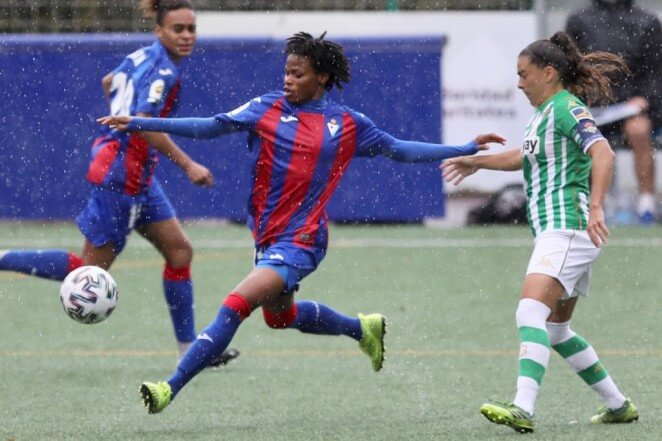

<!DOCTYPE html>
<html lang="es"></html>
<head>
    <meta charset="UTF-8">
    <meta name="viewport" content="width=device-width, initial-scale 1.0">
    <meta name="author" content="Aina Muñoz Fernández">
    <meta name="generator" content="Visual Studio Code">
    <meta name="description" content="Galeria de fotos y videos del equipo femenino del Eibar FC">
    <meta name="keywords" content="fútbol femenino eibar liga iberdrola clasificación">

    <title>Galeria - SD Eibar Femenino</title>

    <link rel="stylesheet" type="text/css" href="../css/common.css">
    <link rel="stylesheet" type="text/css" href="../css/galeria.css">
</head>

<body>
    
    <div class="div-header">
        <header>       
            <!--imagen liga iberdrola-->
            
        
        </header>
    
        <div class="header-equipo">
        
            <a href="../index.html" class="return-home"><h1>SD Eibar Femenino </h1></a> 
            <!--Menú de navegación de classificacion / resultados /galeria-->
        
            <ul class="ul-navbar">
            
                <li><a href="../web/classif.html">Clasificación</a></li>
                <li><a href="../web/resultats.html">Resultados</a></li>
                <li><a href="../web/galeria.html">Galeria</a></li> 
                <li><a href="../web/enquesta.html">Encuesta</a></li> 
            
            </ul>
    
        
        </div>
    
    </div>

    <main>
        
        <div class="div-content">

            
            <!--Imágenes-->
            <div class="galimag">
                <h2>Galeria de imágenes</h2>
                
                
                
                
            </div>

            <!--Vídeos-->
            <div class="galvideos">
                <h2>Galeria de vídeos</h2>

                <div class="div-video" id="local-video">
                    
                    <h3>Women's Eibar keep flying high</h3>
                    
                    <video width="560" height="315" controls>
                        <source src="../vid/womens-eibar.mp4" type="video/mp4">
                    Tu navegador no soporta este formato de vídeo.
                    </video>
                </div>

                <div class="div-video" id="iframe-video">

                <h3>El primer equipo femenino del Eibar sube a Primera División!</h3>
                <iframe width="560" height="315" src="https://www.youtube.com/embed/tPmo4jBBs6M" frameborder="0"
                allow="accelerometer; autoplay; clipboard-write; encrypted-media; gyroscope; picture-in-picture"
                allowfullscreen></iframe>

                </div>
            </div>
            
     
        </div>

    </main>

</body>

<footer>
    <!--aquí va tema copyright + info contacto + redes sociales-->
    
    <!--esta lista tendrá que ir inline-->
    <ul class="contact"> 
        <li><p class="contact-text">&copy; SD Eibar FC Femenino</p></li>
        <li><address><p class="contact-text">Ipurua Kalea 2, 20600 Eibar (Gipuzkoa)</p></address></li>
        <li><p class="contact-text">Telf. 943 201 831</p></li>
        <li><p class="contact-text">Fax. 943 202 606</p></li>
        <li><a href="https://www.instagram.com/sdeibar/?hl=es" target="_blank">
            
        </a></li>
        <li><a href="https://www.facebook.com/sdeibar/" target="_blank">
            
        </a></li>
        <li><a href="https://twitter.com/SDEibar" target="_blank">
            
        </a></li>
        <li><a href="https://www.youtube.com/channel/UClHd-P6Bfkm1dlUkMdkTemg" target="_blank">
            
        </a> </li>
      </ul> 
    
     
</footer>